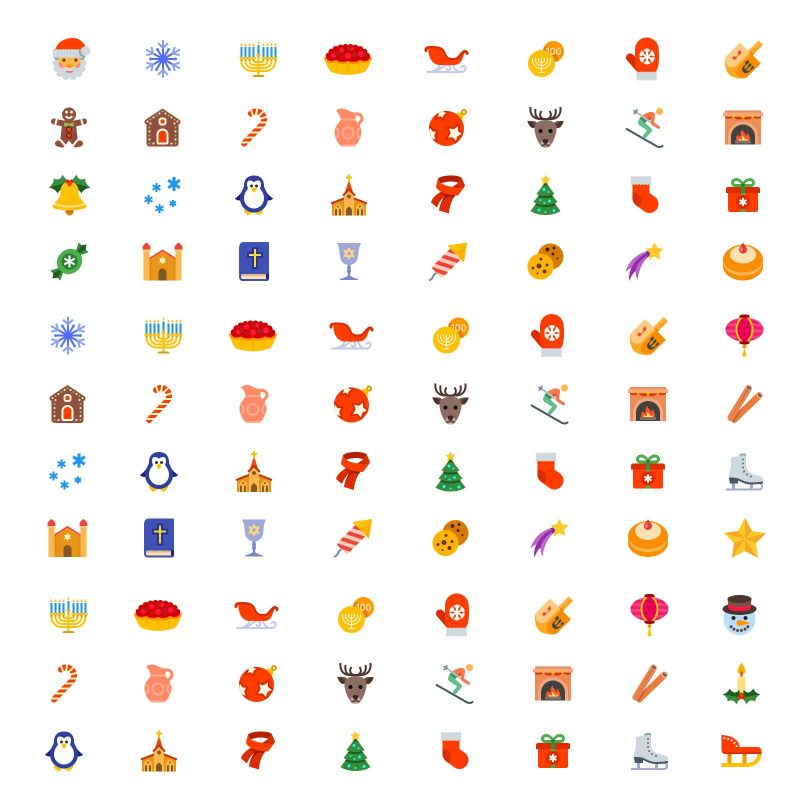

Social media are interactive computer-mediated technologies that facilitate the creation or sharing of information, ideas, career interests and other forms of expression via virtual communities and networks.[1][2] The variety of stand-alone and built-in social media services currently available introduces challenges of definition; however, there are some common features. Social media are interactive computer-mediated technologies that facilitate the creation or sharing of information, ideas, career interests and other forms of expression via virtual communities and networks.[1][2] The variety of stand-alone and built-in social media services currently available introduces challenges of definition; however, there are some common features. Social media are interactive computer-mediated technologies that facilitate the creation or sharing of information, ideas, career interests and other forms of expression via virtual communities and networks.[1][2] The variety of stand-alone and built-in social media services currently available introduces challenges of definition; however, there are some common features. Social media are interactive
computer-mediated technologies that facilitate the creation or sharing of information, ideas, career interests and other forms of expression via virtual communities and networks.[1][2] The variety of stand-alone and built-in social media services currently available introduces challenges of definition; however, there are some common features. Social media are interactive computer-mediated technologies that facilitate the creation or sharing of information, ideas, career interests and other forms of expression via virtual communities and networks.[1][2] The variety of stand-alone and built-in social media services currently available introduces challenges of definition; however, there are some common features. Social media are interactive computer-mediated technologies that facilitate the creation or sharing of information, ideas, career interests and other forms of expression via virtual communities and networks.[1][2] The variety of stand-alone and built-in social media services currently available introduces challenges of definition; however, there are some common features. Social media are interactive computer-mediated technologies that facilitate the creation or sharing of information, ideas, career interests and other forms of expression via virtual communities and networks.[1][2] The variety of stand-alone and built-in social media services currently available introduces challenges of definition; however, there are some common features. Social media are interactive computer-mediated technologies that facilitate the creation or sharing of information, ideas, career interests and other forms of expression via virtual communities and networks.[1][2] The variety of stand-alone and built-in social media services currently available introduces challenges of definition; however, there are some common features. Social media are interactive computer-mediated technologies that facilitate the creation or sharing of information, ideas, career interests and other forms of expression via virtual communities and networks.[1][2] The variety of stand-alone and built-in social media services currently available introduces challenges of definition; however, there are some common features.
Social media are interactive computer-mediated technologies that facilitate the creation or sharing of information, ideas, career interests and other forms of expression via virtual communities and networks.[1][2] The variety of stand-alone and built-in social media services currently available introduces challenges of definition; however, there are some common features. Social media are interactive computer-mediated technologies that facilitate the creation or sharing of information, ideas, career interests and other forms of expression via virtual communities and networks.[1][2] The variety of stand-alone and built-in social media services currently available introduces challenges of definition; however, there are some common features. Social media are interactive computer-mediated technologies that facilitate the creation or sharing of information, ideas, career interests and other forms of expression via virtual communities and networks.[1][2] The variety of stand-alone and built-in social media services currently available introduces challenges of definition; however, there are some common features. Social media are interactive computer-mediated technologies that facilitate the creation or sharing of information, ideas, career interests and other forms of expression via virtual communities and networks.[1][2] The variety of stand-alone and built-in social media services currently available introduces challenges of definition; however, there are some common features.
Social media are interactive computer-mediated technologies that facilitate the creation or sharing of information, ideas, career interests and other forms of expression via virtual communities and networks.[1][2] The variety of stand-alone and built-in social media services currently available introduces challenges of definition; however, there are some common features. Social media are interactive computer-mediated technologies that facilitate the creation or sharing of information, ideas, career interests and other forms of expression via virtual communities and networks.[1][2] The variety of stand-alone and built-in social media services currently available introduces challenges of definition; however, there are some common features. Social media are interactive computer-mediated technologies that facilitate the creation or sharing of information, ideas, career interests and other forms of expression via virtual communities and networks.[1][2] The variety of stand-alone and built-in social media services currently available introduces challenges of definition; however, there are some common features. Social media are interactive computer-mediated technologies that facilitate the creation or sharing of information, ideas, career interests and other forms of expression via virtual communities and networks.[1][2] The variety of stand-alone and built-in social media services currently available introduces challenges of definition; however, there are some common features. Social media are interactive computer-mediated technologies that facilitate the creation or sharing of information, ideas, career interests and other forms of expression via virtual communities and networks.[1][2] The variety of stand-alone and built-in social media services currently available introduces challenges of definition; however, there are some common features. Social media are interactive computer-mediated technologies that facilitate the creation or sharing of information, ideas, career interests and other forms of expression via virtual communities and networks.[1][2] The variety of stand-alone and built-in social media services currently available introduces challenges of definition; however, there are some common features. Social media are interactive computer-mediated technologies that facilitate the creation or sharing of information, ideas, career interests and other forms of expression via virtual communities and networks.[1][2] The variety of stand-alone and built-in social media services currently available introduces challenges of definition; however, there are some common features. Social media are interactive computer-mediated technologies that facilitate the creation or sharing of information, ideas, career interests and other forms of expression via virtual communities and networks.[1][2] The variety of stand-alone and built-in social media services currently available introduces challenges of definition; however, there are some common features. Social media are interactive computer-mediated technologies that facilitate the creation or sharing of information, ideas, career interests and other forms of expression via virtual communities and networks.[1][2] The variety of stand-alone and built-in social media services currently available introduces challenges of definition; however, there are some common features. Social media are interactive computer-mediated technologies that facilitate the creation or sharing of information, ideas, career interests and other forms of expression via virtual communities and networks.[1][2] The variety of stand-alone and built-in social media services currently available introduces challenges of definition; however, there are some common features. Social media are interactive computer-mediated technologies that facilitate the creation or sharing of information, ideas, career interests and other forms of expression via virtual communities and networks.[1][2] The variety of stand-alone and built-in social media services currently available introduces challenges of definition; however, there are some common features. Social media are interactive computer-mediated technologies that facilitate the creation or sharing of information, ideas, career interests and other forms of expression via virtual communities and networks.[1][2] The variety of stand-alone and built-in social media services currently available introduces challenges of definition; however, there are some common features. Social media are interactive computer-mediated technologies that facilitate the creation or sharing of information, ideas, career interests and other forms of expression via virtual communities and networks.[1][2] The variety of stand-alone and built-in social media services currently available introduces challenges of definition; however, there are some common features. Social media are interactive computer-mediated technologies that facilitate the creation or sharing of information, ideas, career interests and other forms of expression via virtual communities and networks.[1][2] The variety of stand-alone and built-in social media services currently available introduces challenges of definition; however, there are some common features. Social media are interactive computer-mediated technologies that facilitate the creation or sharing of information, ideas, career interests and other forms of expression via virtual communities and networks.[1][2] The variety of stand-alone and built-in social media services currently available introduces challenges of definition; however, there are some common features. Social media are interactive computer-mediated technologies that facilitate the creation or sharing of information, ideas, career interests and other forms of expression via virtual communities and networks.[1][2] The variety of stand-alone and built-in social media services currently available introduces challenges of definition; however, there are some common features. Social media are interactive computer-mediated technologies that facilitate the creation or sharing of information, ideas, career interests and other forms of expression via virtual communities and networks.[1][2] The variety of stand-alone and built-in social media services currently available introduces challenges of definition; however, there are some common features. Social media are interactive computer-mediated technologies that facilitate the creation or sharing of information, ideas, career interests and other forms of expression via virtual communities and networks.[1][2] The variety of stand-alone and built-in social media services currently available introduces challenges of definition; however, there are some common features. Social media are interactive computer-mediated technologies that facilitate the creation or sharing of information, ideas, career interests and other forms of expression via virtual communities and networks.[1][2] The variety of stand-alone and built-in social media services currently available introduces challenges of definition; however, there are some common features. Social media are interactive computer-mediated technologies that facilitate the creation or sharing of information, ideas, career interests and other forms of expression via virtual communities and networks.[1][2] The variety of stand-alone and built-in social media services currently available introduces challenges of definition; however, there are some common features.
